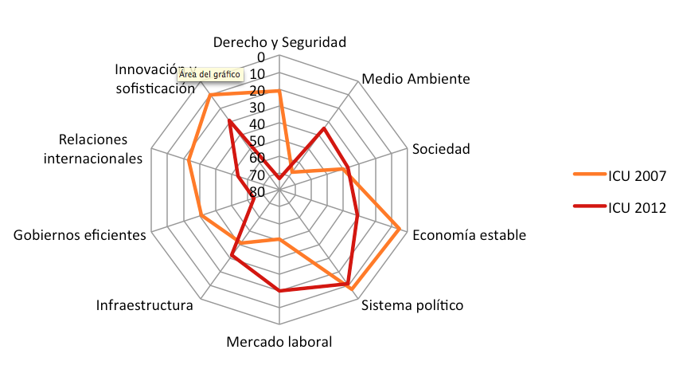
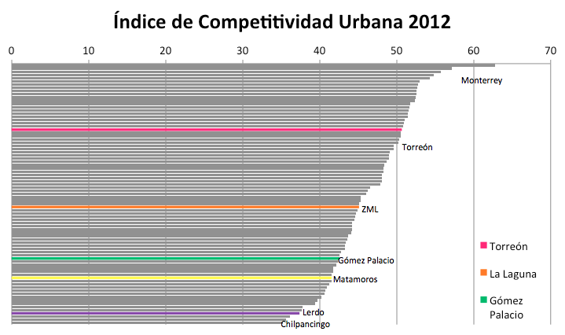
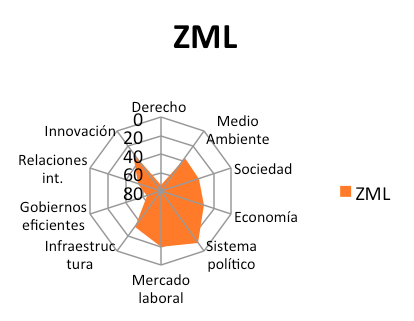
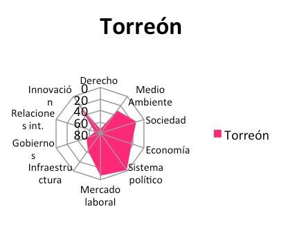
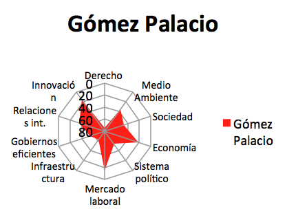
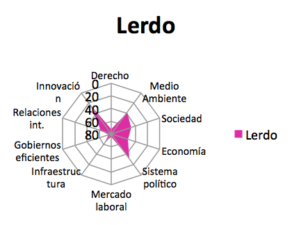
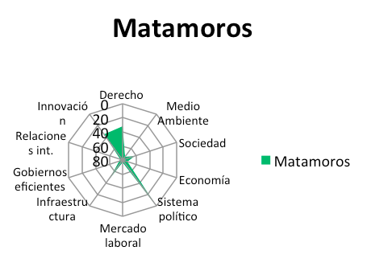

Competitividad de la Zona Metropolitana de la Laguna. Indicadores por municipio construidos por el IMPLAN con la base de datos y metodología del IMCO.
El Instituto Mexicano para la Competitividad (IMCO) realiza desde el año 2004 mediciones sobre la competitividad en México, bajo las premisas de realizarlas “a partir de datos duros y fuentes indiscutibles por su rigor e imparcialidad; a partir de una visión integral, que contemple todas las aristas posibles, que además pueda seguirse en el tiempo, y cuya estructura y cálculo sean accesibles, claros y transparentes.”[1]
Desde este enfoque la competitividad no es ya un asunto de empresas sino un asunto de países, estados y ciudades, y para ello sus estudios contemplan diez factores de competitividad: Sistema de derecho confiable y objetivo; manejo sustentable del medio ambiente; sociedad incluyente, preparada y sana; economía estable; sistema político estable y funcional; mercado laboral; infraestructura; gobiernos eficientes y eficaces; aprovechamiento de las relaciones internacionales y; sectores de innovación y sofisticación. Por ello a partir de 2006 el IMCO construyo un Índice de Competitividad Estatal y a partir de 2007 un Índice de Competitividad Urbana que compara 77 zonas metropolitanas del país.
El índice de Competitividad Urbana (ICU) ha sido dado a conocer en 2007, 2010 y 2012, con información proveniente de fuentes diversas verificables de años anteriores a su publicación. El presente análisis del ICU 2012[2] desarrollado por el Instituto de Planeación y Competitividad de Torreón da base para entender y analizar la competitividad de acuerdo a los criterios del IMCO, quien dará a conocer el ICU 2014 próximamente con información correspondiente a 2012.
Índice General
A través de estas mediciones podemos ver como la Zona Metropolitana de la Laguna (ZML) pasó de ser una ciudad de alta competitividad en 2007, a considerarse de competitividad media en 2010 y colocarse en competitividad media baja en 2012 de acuerdo a la metodología de IMCO. Los indicadores que pondera el Índice de Competitividad Urbana, se han venido modificando, sin embargo se han mantenido los diez subíndices que permiten dar comparabilidad a través del tiempo, haciendo posible focalizar los puntos de deterioro y también reconocer los aspectos en que hemos avanzado.
Como muestra la Gráfica 1, en el subíndice de Sistema de Derecho, pasamos de estar entre las 20 ciudades más fiables, a estar entre las peores 10. La estabilidad económica, las relaciones internacionales, la innovación y la eficiencia de los gobiernos, sufrieron también decrementos en comparación con otras ciudades que innovaron y se adaptaron a los tiempos.
Gráfica 1
Evolución de la Zona Metropolitana de la Laguna en el Índice de Competitividad Urbana 2007-2012
Sin embargo es relevante destacar los avances que se experimentó en Medio Ambiente donde hace 8 años presentábamos un grave rezago y aunque todavía hay mucho por avanzar, la mejora fue significativa, así como y en los factores de mercado laboral, subíndice en el cual pasamos a ocupar los primeros puestos.
Es ineludible que conformamos una metrópoli, y si bien eso implica que los esfuerzos deberán ser conjuntos para insertar al municipio en una dinámica de competitividad, resulta también necesario conocer y diagnosticar las fortalezas y debilidades específicas de cada municipio.
Gráfica 2
El municipio de Torreón considerado sin la zona metropolitana, ocuparía el sitio 17 en el Índice de Competitividad Urbana, sobre el resto de municipios de la ZML, destacan sus subíndices de Sociedad y Mercado Laboral, y en menor medida Economía, Gobierno e Innovación. Sin embargo muestra un déficit respecto a la ZML en Relaciones Internacionales e Infraestructura.
Gráfica 3
Gráfica 4
El municipio de Gómez Palacio considerado sin la zona metropolitana, ocuparía el sitio 59 en el Índice de Competitividad Urbana, ocupando la segunda posición de la ZML. Destacan por su influencia positiva en la ZML sus subíndices de Relaciones Internacionales, Innovación, Economía y Medio Ambiente. Sin embargo Sistema Político, Gobiernos Eficientes y Sociedad muestran un amplio déficit respecto a la ZML en su conjunto.
Gráfica 5
Gráfica 6
Lerdo ocuparía el puesto 74 de 77 Ciudades si se le aísla, de la ZML, resaltan sin embargo sus aportes en Medio Ambiente y en menor medida en Sistema Político. Sin embargo su déficit en Factores del Mercado Laboral impacta fuertemente en la competitividad de la zona.
Gráfica 7
En cuanto al Municipio de Matamoros ocuparía por si sólo la posición 64. Si bien destaca su aporte en la Estabilidad de su Sistema Político, y Estado de Derecho, al ser el municipio menos inseguro de la región en los años de referencia, su déficit en Sociedad, Mercado Laboral y Medio Ambiente impactan en la competitividad de la región más aún considerando que constituye la reserva territorial más próxima al municipio de Torreón.
[1] Instituto Mexicano Para la Competitividad (2004), Situación de la Competitividad en México. Hacia un pacto de Competitividad, IMCO, México.
[2] Análisis de acuerdo a la base de datos disponible en: http://porciudad.comparadondevives.org/contacto